Australia’s search and rescue region spans nearly one tenth of the Earth’s surface. This is a coordination area, not a claim of continuous surveillance coverage.
AMSA · search and rescue region ↗Honours research · UTS · 2026
Seeing ships.
Beyond the signal.
AI ship segmentation for enhancing Australia's maritime surveillance.
When vessel reports are missing or misleading, an independent view matters. This study compares six segmentation model families to explore what radar and visible-light imagery could contribute.
01 / VISIBLE LIGHTDATASET EXAMPLE
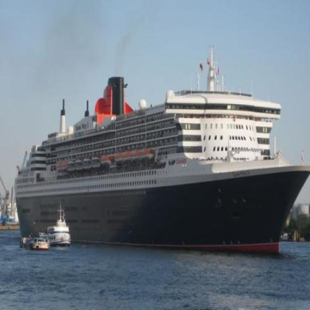
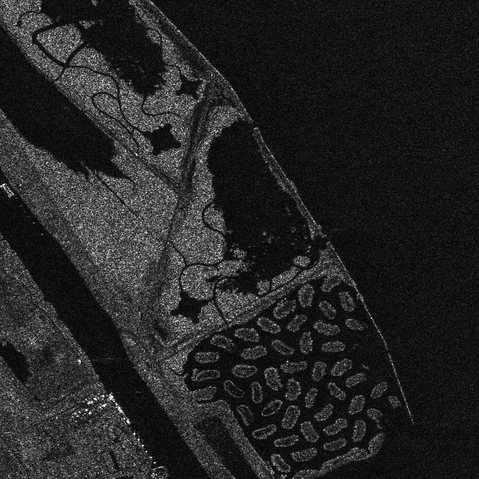
models see.Explore the visual evidence ↗
Original dataset photography and radar imagery · illustrative examples
SCROLL TO EXPLORE ↓COMPUTER VISION / MARITIME RESEARCH
6model families
8 evaluated variants
8 evaluated variants
3primary datasets
plus LS-SSD transfer
plus LS-SSD transfer
24retained training histories
including diagnostic runs
including diagnostic runs
34pages of methods,
results and discussion
results and discussion
01 / Why this research matters
A vessel can be there.
Its report can be missing.
Smuggling and deceptive shipping make an independent view of the sea worth investigating.
AIS and LRIT contribute vessel identity and position reports to maritime awareness. But reporting is not the same as directly observing a vessel. AMSA notes that AIS can be switched off for safety or security reasons; LRIT normally reports every six hours. Neither an AIS gap nor an unusual movement proves criminal activity. [1] [2]
The risk is real: the European Maritime Safety Agency identifies AIS spoofing as a threat, and the US Treasury documents disabled or manipulated AIS being used to conceal illicit oil transfers and evade sanctions. Missing or misleading reports can help obscure the movements investigators need to understand. [3] [4]
The quantity of cocaine initially reported in a November 2024 Queensland maritime seizure. Authorities charged 13 people over the alleged importation by sea.
ABF · December 2024 announcement ↗Increase in reported maritime cyber incidents the US Coast Guard responded to: 42 in 2025 versus 36 in 2024. This is a US reporting measure, not an Australian attack rate.
US Coast Guard · 2025 CTIME report ↗WHAT YOU WILL FIND IN THE REPORT
Which models see ships reliably—and where do they fall short?
The report compares accuracy, recall, speed, training behaviour and failure cases across SAR and visible-light imagery. It examines whether segmentation could provide observations to cross-check vessel reports in future AMSA-related integration research.
This is a segmentation study, not a cyber-defence system or a smuggling detector. It did not test live AMSA systems, identify illicit cargo or establish that AIS manipulation caused the Queensland case. Maritime enforcement involves ABF, the AFP and partner agencies; these examples do not establish a breach of AMSA’s systems.
02 / The imagery
Three datasets.
Different ways of seeing.
From radar texture to colour and fine detail.
These are real images from the study’s datasets.
A CLOSER LOOK
A ship is more than a point.
Instance segmentation traces individual vessels. The annotation tells the model which pixels belong to a ship, so the comparison can go beyond simply finding a bright return.
Move the slider to compare an original SSDD image with its ground-truth annotation.
Same retained test image: 1083882818.
This shows an annotation, not a model’s prediction.
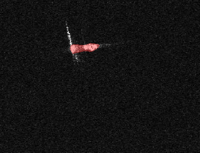
ANNOTATIONORIGINAL03 / Selected final results
The strongest model
depends on the imagery.
RF-DETR led SSDD and visible light.
YOLO26m led HRSID.
Values are held-out test measurements.
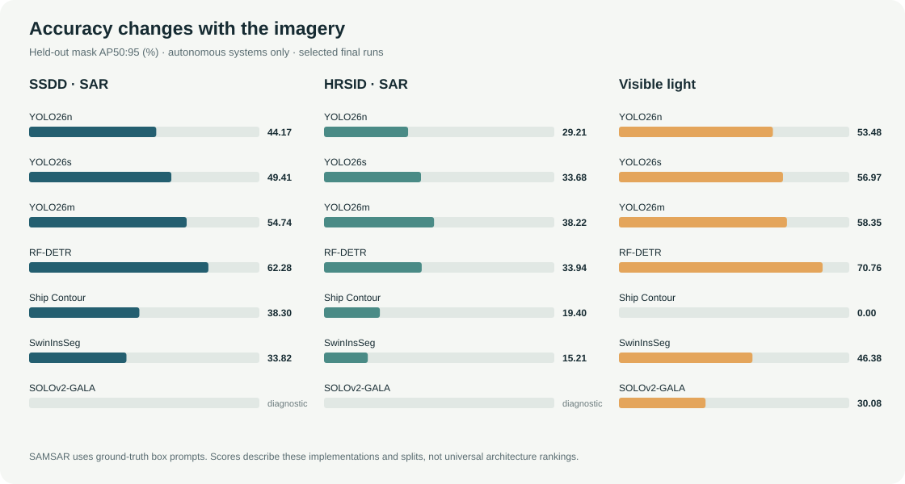
Loading the selected results…
| Model | Mask AP50:95 | AP50 | Precision | Recall | F1 | FPS |
|---|
Accuracy values are percentages. Precision, recall and F1 use each model's validation-selected threshold. Some SAR FPS results used different GPUs and input settings; they are not a controlled hardware comparison. Download the underlying data ↗
Accuracy and speed trade off.
On the same visible-light A100 GPU, RF-DETR achieved 70.76% mask AP at 7.64 FPS; YOLO26m reached 58.35% at 25.02 FPS.
Prompted is a different task.
SAMSAR receives ground-truth boxes. Its strong mask scores are reported separately because the target locations are supplied.
Transfer remains difficult.
On 500 ship-containing LS-SSD images, the highest external box recall was 23.54%. Strong in-domain scores did not establish reliable transfer.
04 / Visual evidence
Look beyond one score.
Shared-image comparisons show differences in mask extent and missed targets. A single image illustrates an outcome; it does not establish a dataset-wide failure rate.
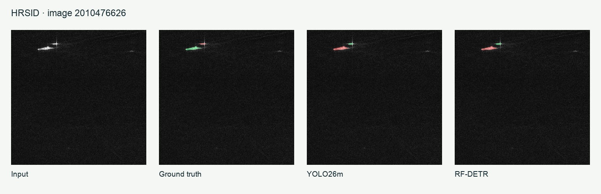
A missed-target example on HRSID +
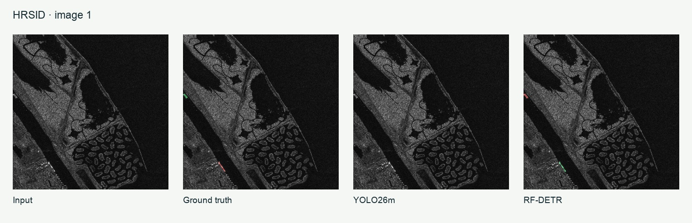
On HRSID image 1, YOLO26m displays no masks at its selected threshold despite two annotated ships. RF-DETR displays two masks. Their correctness still depends on overlap with the annotations.
Training and validation, together
Native ClearML exports from the selected runs. Expand a dataset to inspect loss and validation mask AP.
SSDD · training history +

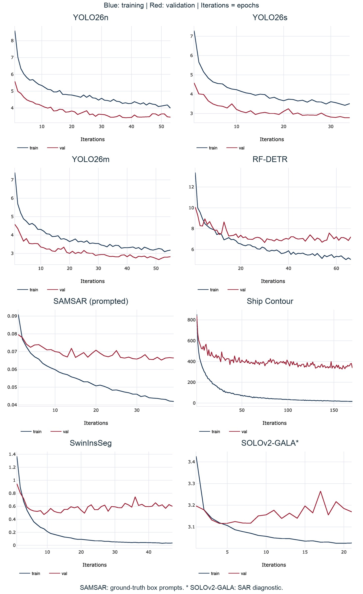

HRSID · training history +

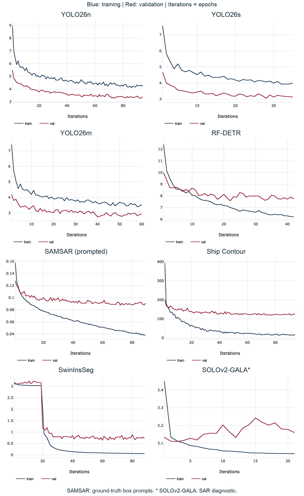

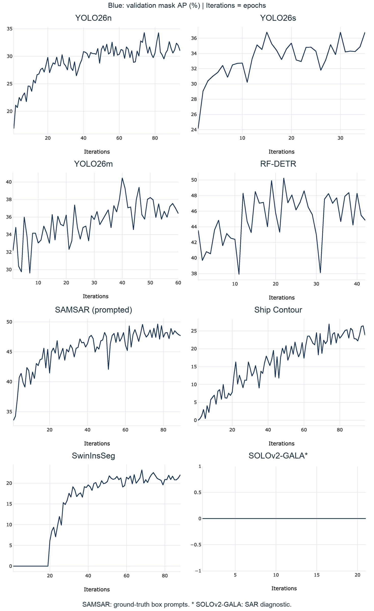
Visible light · training history +

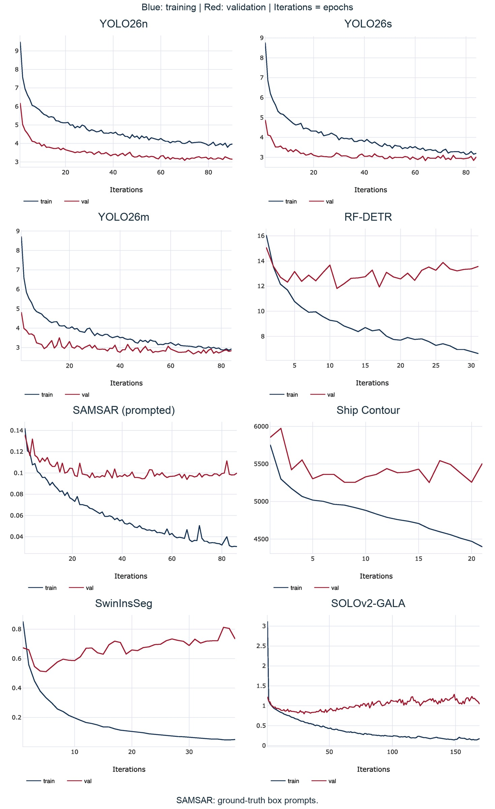

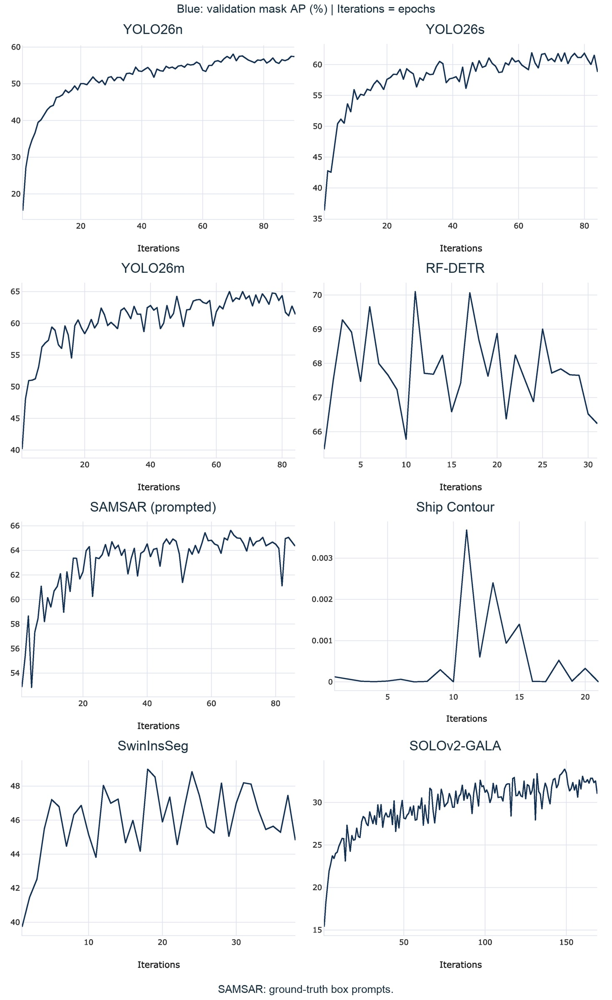
The original ClearML UI labels the horizontal axis “Iterations”; epoch values were supplied by the pipeline. Loss scales differ between models. SAMSAR uses ground-truth prompts; SAR SOLOv2 curves are unsuccessful diagnostic runs. Click a curve image for a larger view.

05 / Full research report
The reasoning
behind the results.
The complete honours report brings together the research background, model implementations, experimental protocol, quantitative results, training behaviour and failure analysis.
Public copy: student number removed; submitted text retained. This is an honours report, not a claim of peer-reviewed publication.
Preview the report here +
If your browser cannot display the PDF, use the open or download links above.
06 / Inspect the implementation
Evidence you can follow.
01 / NOTEBOOKS
SAR & visible workflows ↗
Colab entrypoints for preparation, training and evaluation, with retained outputs where available.
02 / SOURCETraining & evaluation code ↗
Historical source versions and recorded settings, with their provenance and implementation limits.
03 / REPRODUCTIONStart with the evidence ↗
Inspect metrics without a GPU, then follow the environment and data requirements for training.